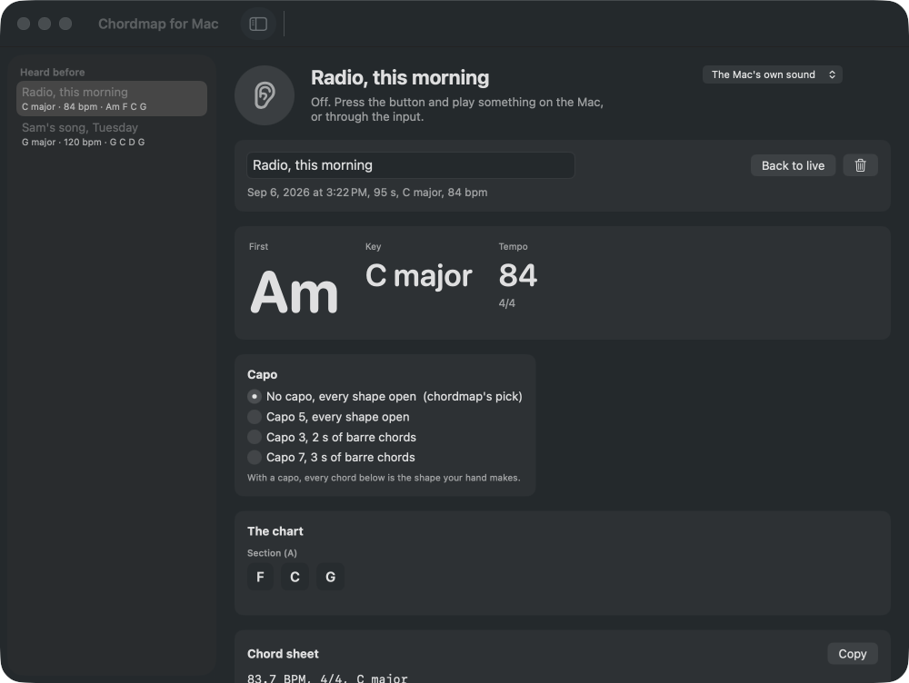

Play any song on the Mac.
See the chords.
Key, tempo, the chords bar by bar, the sections, and where the capo goes so the open shapes play it. Live, while the song plays, in any app. Every listen kept with its chord sheet.
Download for macOS Free. Open source. macOS 14 or later, Apple Silicon. Nothing recorded, nothing leaves the Mac.

What it does
The chords, as they go by
Every two seconds the engine re-hears the last 24 seconds: the chord now, the key with its runner-up, the tempo and the meter, and one chip per bar grouped by section.Where the capo goes
Every fret from 0 to 7 is scored by how many seconds land on barre chords. Pick the engine's choice or another and every chord turns into the shape your hand makes.Heard before
Stop, and the whole listen is charted and kept: key, tempo, sections, bars, and chordmap's chord sheet to copy. Retitle it, come back to it.It hears; it never records
Sound stays in memory for the length of a listen. No database, no song titles, no upload, no account. The engine is chordmap, pure Rust, the same one behind the web app.
Honest limits
A clear mix charts well; a wall of distortion, a solo voice or a beat with little harmony charts less well, and sparse harmony is flagged rather than invented. Major and minor chords and sevenths. Four seconds is the least it will chart, and the live view lags the song by about two seconds. macOS asks once for System Audio Recording; that is how it describes hearing what the Mac plays.
Also a command line: chordmac song.wav --capo 3. MIT licensed. One of the free Mac apps at keithadler.github.io.